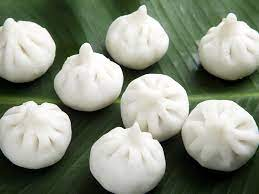

How to make Modak

Description:-
Modak is Bhagwan Ganesha’s favorite sweet and made in many Hindu homes during the first day of Ganesh Chaturthi
Festival. The most popular variety of modak that is made is Ukadiche modak (steamed modak) which is from the
Maharashtrian Cuisine. In this post I am sharing two ways of making modak recipe – with mould and without the
mould.
Ingredients of Modak:-
- For Filling:-
- 1 cup coconut, grated
- 1 cup jaggery
- A pinch of nutmeg
- A pinch of saffron
- For the shell:-
- 1 cup water
- 2 tsp ghee
- 1 cup rice flour
Directions:-
Prepare fillling:
- Heat a pan, add the grated coconut and jaggery.
- Stir for about five minutes. Add the nutmeg and saffron, mix well.
- Cook for another five minutes and keep aside.
Prepare modak:
- In a deep dish, boil water with ghee. Add the salt and flour. Mix well.
- Cover the dish and cook till its half done.
- Spread some ghee on the base of a steel bowl and while the dough is still hot, knead it well.
- Now take a little dough, roll it into a ball, flatten it well, shape the edges into a flower pattern.
- Put a spoonful of the filling onto the dough and seal it.
- Put the dumplings in a muslin cloth and steam them for 10- 15 minutes. Serve.
Back To Main Page